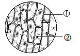

2023年北京市中考生物真题 · 选择题 第1、2、3、4、5题 · 对应解析
1. 除病毒外，生物体结构和功能的基本单位是（ ）
A. 组织B. 细胞C. 器官D. 系统
【答案】B
【解析】
【分析】除病毒外细胞是生物体结构和功能的基本单位，是进行生命活动的基本场所。
【详解】除病毒外细胞是生物体结构和功能的基本单位，生物体由细胞构成组织，组织构成器官，器官构成系统，进而构成生物体。
【点睛】细胞是生命活动的基本结构和功能单位。
2. 下列由一个细胞构成，能独立完成生命活动的生物是（ ）
A. 水螅B. 草履虫C. 水绵D. 线虫
【答案】B
【解析】
【分析】有些生物的整个身体就是一个细胞，称为单细胞生物。
【详解】单细胞生物的整个身体由一个细胞构成，能独立完成生命活动。水螅、水绵和线虫都是多细胞生物。草履虫的整个身体由一个细胞构成，能独立完成生命活动，属于单细胞生物，因此ACD错误，B正确。
故选B。
3. 在显微镜下观察洋葱鳞片叶内表皮临时装片，视野如下图。下列相关叙述错误的是（ ）

A. ①为洋葱鳞片叶内表皮细胞
B. ②可能是由于加盖盖玻片操作不规范引起的
C. 用碘液染色后能够更清晰地观察到细胞核
D. 细胞的放大倍数为目镜与物镜放大倍数之和
【答案】D
【解析】
【分析】制作洋葱表皮细胞临时装片的简要步骤：擦、 滴（清水）、撕 、展 、盖、 染 、吸。图中，①是洋葱鳞片叶内表皮细胞，②是气泡。
【详解】A．一般来说，气泡在显微镜的视野中呈现为具有较黑、较宽边缘的图像，形状为圆形或椭圆形。会变形、会移动；而细胞有一定的形态和结构，不变形、不移动。因此，①为洋葱鳞片叶内表皮细胞，②为气泡，A正确。
B．盖盖玻片时，用镊子夹起盖玻片的一边，使它的另一边先接触载玻片上的水滴，然后缓缓放下，这样可以避免盖玻片下面出现气泡而影响观察。故②可能是由于加盖盖玻片操作不规范引起的，B正确。
C．细胞核中容易被碱性染料染成深色的物质，叫做染色体。故用碘液染色后能够更清晰地观察到细胞核，C正确。
D．显微镜的放大倍数=目镜放大倍数×物镜放大倍数，故细胞的放大倍数为目镜与物镜放大倍数之积，D错误。
故选D。
4. 正常情况下，人体细胞在形态、结构和生理功能上发生差异，形成多种类型细胞的过程称为（ ）
A. 细胞分裂B. 细胞生长C. 细胞分化D. 细胞衰老
【答案】C
【解析】
【分析】多细胞生物体能够由小长大的原因是细胞生长、分裂、分化的共同结果。
【详解】A．细胞分裂就是一个细胞分成两个细胞的过程，细胞分裂使细胞数目增多，细胞分裂是生物体生长、发育和繁殖的基础，A错误。
B．新分裂产生的细胞体积很小，需要不断从周围环境中吸收营养物质，并且转变成组成自身的物质，体积逐渐增大，这就是细胞的生长，B错误。
C．生物在个体发育过程中，一个或一种细胞通过分裂产生的后代，在形态、结构和生理功能上发生差异性的变化，这个过程叫做细胞分化。细胞分化产生了不同的细胞群（组织）。可见，人体细胞在形态、结构和生理功能上发生差异，形成多种类型细胞的过程称为细胞分化，C正确。
D．细胞衰老是指细胞在执行生命活动过程中，随着时间的推移，细胞增殖与分化能力和生理功能逐渐发生衰退的变化过程，D错误。
故选C。
5. “海洋牧场”有重要的经济价值和生态价值。它是指在特定海域内，人工投放藻类、贝类和鱼虾等海洋经济生物种苗，利用海洋中的天然饵料等进行集中养殖和科学管理，类似于在陆地上放牧牛羊。下列关于“海洋牧场”的叙述错误的是（ ）
A. 属于海洋生态系统B. 能量最终来源于太阳能
C. 其中的藻类可以制造有机物D. 有无限的自我（动）调节能力
【答案】D
【解析】
【分析】1．在一定的空间范围内，生物与环境所形成的统一的整体叫生态系统。生态系统包括生物成分和非生物成分，生物成分包括生产者(绿色植物)、消费者(动物)和分解者(细菌、真菌)。一片森林，一块农田，一片草原生态系统，一个湖泊，一条河流等都可以看成一个个生态系统。
2．生态系统中，生产者（植物）能够通过光合作用制造有机物，并将光能储存在有机物中，为自身和其他生物提供了食物和能量，因此，能量流动的起点是从植物固定太阳能开始的。
3．生态平衡是指在一定的时间内，一个自然生态系统内的生物种类和数量一般是相对稳定的，它们之间及其与环境间的能量流动和物质循环也保持相对稳定的状态。生态平衡是一种动态的平衡，它依赖于生态系统的自我调节能力。一般来说，生态系统中生物的种类越多，食物链和食物网越复杂，生态系统的调节能力就越强。
【详解】A．海洋生态系统是由海洋生物群落和海洋环境两大部分组成。由题干可知，“海洋牧场”属于海洋生态系统，A正确。
BC．藻类能够通过光合作用制造有机物，并将光能储存在有机物中，为自身和其他生物提供了食物和能量，因此，能量流动的起点是从植物固定太阳能开始的，所以，该生态系统能量的最终来源是太阳光能，BC正确。
D．生态系统具有一定的自动调节能力，但这个自动调节能力是有限制的，超过了这个限制，生态平衡就会遭到破坏，D错误。
故选D。